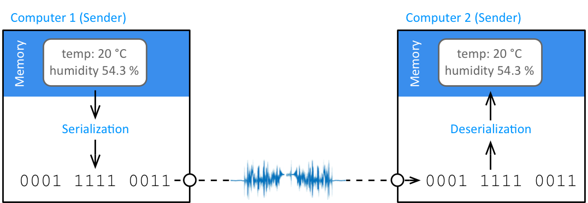

When two computers communicate, they send their data as a sequence of
bits or bytes, which in turn are transformed into electrical or optical
signals that then travel via cables or fibers. But how do we get such a
sequence of bits from the data? Somehow we must ensure that data that is
translated into a sequence of bits also can be translated back again
once we receive them. For this, we need serialization methods.

If we just want to transfer text, there is for instance the ASCII
standard that explains how letters, numbers and other signs are
transformed into bits. A text (or string) is a sequence of characters,
An A, for instance, is represented by the bits 100 0001. The Unicode
standard expands ASCII to convert a much larger set of symbols,
including Ê, ¯, and Â. Unicode also encodes emoji. To transfer
text or emoji, we must hence know ho they are encoded (for instance
which specific version of Unicode) and look up the bits and bytes in a
table. (We serialized the data.) The other way round, when we receive
bits and want to create letters from it, we deserialize the data,
which means that we look up which letters the bits correspond to.
Serialization is not only useful when we want to transmit data from one
computer to another. It is also useful when we want to store a data
structure into a file. A file is storing a series of bytes, and
serialization determines how we get these bytes from a data structure.
Now imagine we want to transfer more structured data, for instance the
measurements of a sensor in a house. We would like to send the current
time, the temperature and the humidity. To do that, we could of course
send a string that just lists the different data items in a sequence,
for instance:
12:05 20.0 54.3
When we then deserialize the data, i.e., construct the measurement
values at the receiver side, we need to know in which sequence these
values were and put everything correct back together. For a simple
problem, this is possible, but you can imagine how many mistakes may
happen here!
Serialization of Data With JSON
Instead of inventing our method of putting data into a data sequence
each time, we use a more robust and standardized way of packing the data
together. Have a look at the following:
This way of writing data is called JSON, pronounced "Jason," and an
abbreviation for JavaScript Object Notation, because it was originally
inspired by how JavaScript serialized its objects. It may also remind
you of a Python dictionary. The example above is only a very simple one.
The data can also be nested, i.e., a data field can refer to a JSON
structure that for instance declares the data fields separate from each
other or adds the information in which unit the measurement is given,
for instance as follows:
There's a lot of history in such data formats, and sometimes it's not
even technical reasons why one is used or the other, or how they look in
detail. Another format used for similar purposes is called XML, or
Extensible Markup Language. In this language, the same piece of data
could look as follows:
The resulting string in JSON almost looks like the original Python
string. This is because Python dictionaries look very similar to JSON,
but this also works for more complex data types.
The other way round will also work; The function json.loads() takes a
JSON string and creates a Python data type from it. For instance, we can
do the following:
The result is that the variable measurement now has data of type
dict. Now we can work on the data like with any other Python data
type, and integrate it in our application.
So, simplified said, with JSON we can convert any Python data type into
a string that follows the JSON specification. It is then easy to store
or transmit this string (as a series of bytes), and transform it back
into data again.